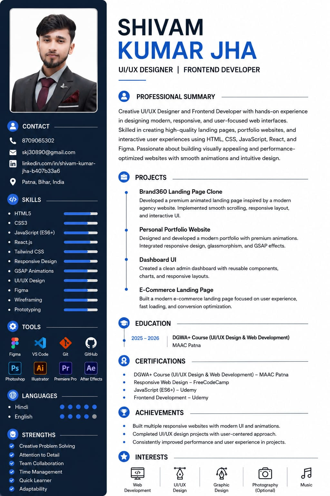

UI/UX Design
Wireframes, visual hierarchy, reusable components, and clear user flows for web interfaces.
Open to junior opportunities
Junior Frontend Developer & UI/UX Designer
I build modern, responsive websites with clean UI, smooth interactions, and thoughtful user experiences.
I’m Shivam, a junior frontend developer and UI/UX designer. I work with HTML, CSS, JavaScript, React, and animation technologies such as GSAP to turn ideas into clear, engaging interfaces.
I care about responsive design, accessibility, and user experience, and I keep improving through real-world projects and regular practice.
Six portfolio builds from the current archive, presented as one continuous digital exhibition.
A growing toolkit built through projects, practice, and continuous learning.
HTML5, CSS3, JavaScript, React, responsive layouts, and accessible structure.
CSS layouts, Tailwind CSS, reusable UI patterns, and mobile-first styling.
JavaScript interactions, GSAP animations, scroll effects, and thoughtful transitions.
Figma, wireframing, prototyping, UI composition, and user-focused visual decisions.
Git, GitHub, VS Code, and a practical frontend workflow.
Photoshop and Illustrator for visual exploration and supporting graphics.
Wireframes, visual hierarchy, reusable components, and clear user flows for web interfaces.
Responsive website layouts with considered typography, spacing, and visual hierarchy.
Landing pages built to practice composition, responsive behavior, and focused calls to action.
Frontend implementations using HTML, CSS, JavaScript, React, and animation tools such as GSAP.
My current development journey is shaped by learning, practice, and building real personal projects.
Learning and building responsive interfaces with HTML, CSS, JavaScript, React, and GSAP.
Practicing wireframing, prototyping, visual systems, and clear user-focused layouts.
Applying what I learn through website concepts, interactive UI, responsive layouts, and animation experiments.
Current areas of coursework, practice, and continued development from the portfolio and resume files.
Open full resume ↗The uploaded resume contains contact details, skills, projects, education, certifications, strengths, and interests.
View resume ↗
I am open to Junior Frontend Developer roles, internships, and freelance projects.
CLIENT DISCOVERY
The uploaded discovery form already turns project answers into a structured planning brief. Keep the full form separate so it stays focused and easy to complete.
Open project brief ↗ Email directly ↗